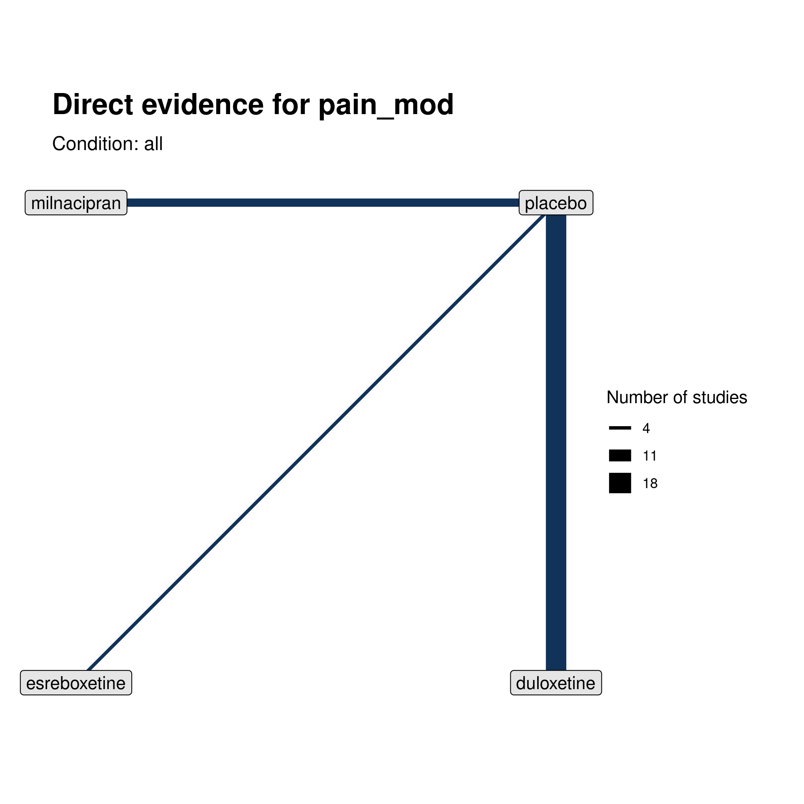
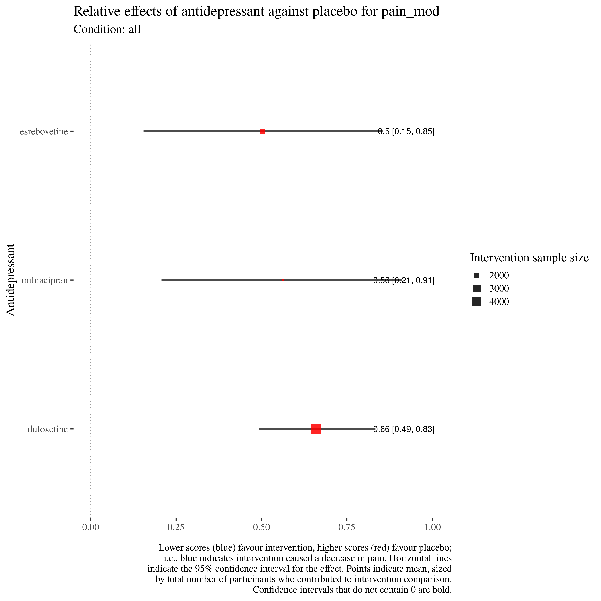
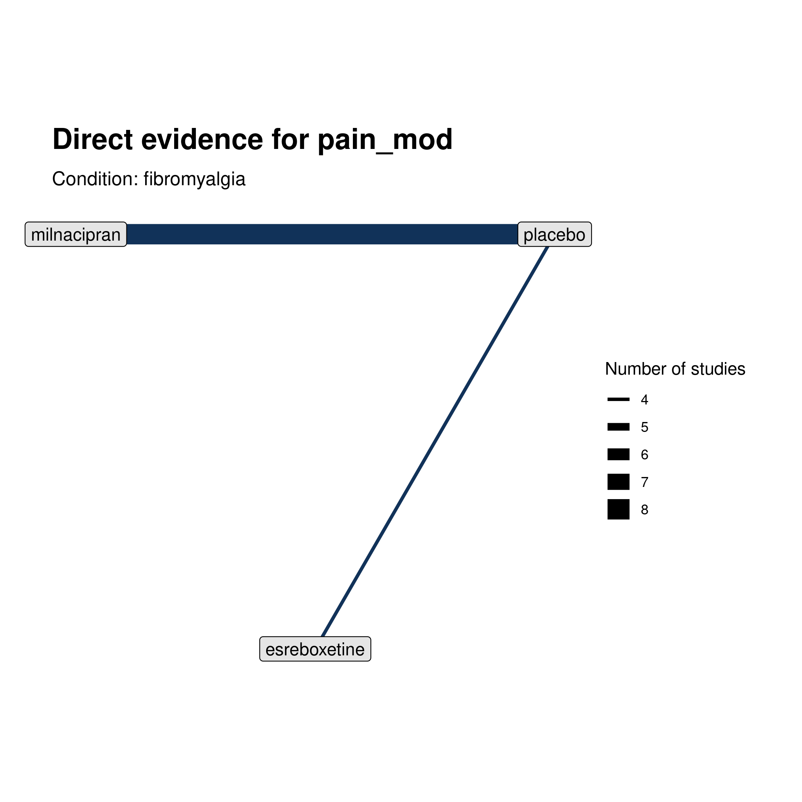
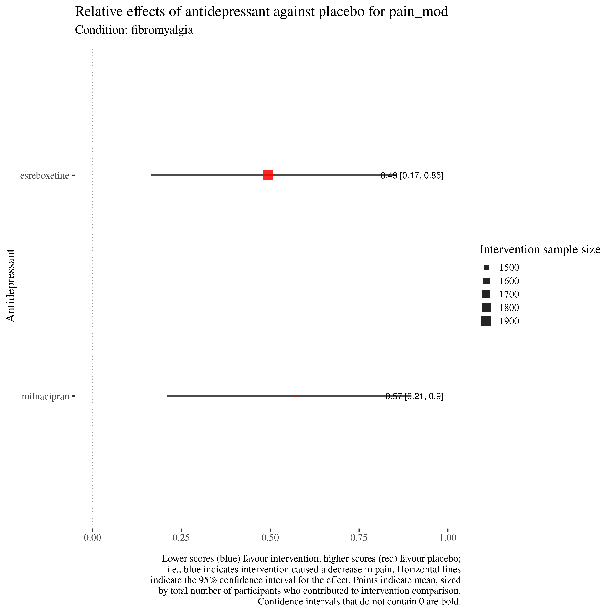
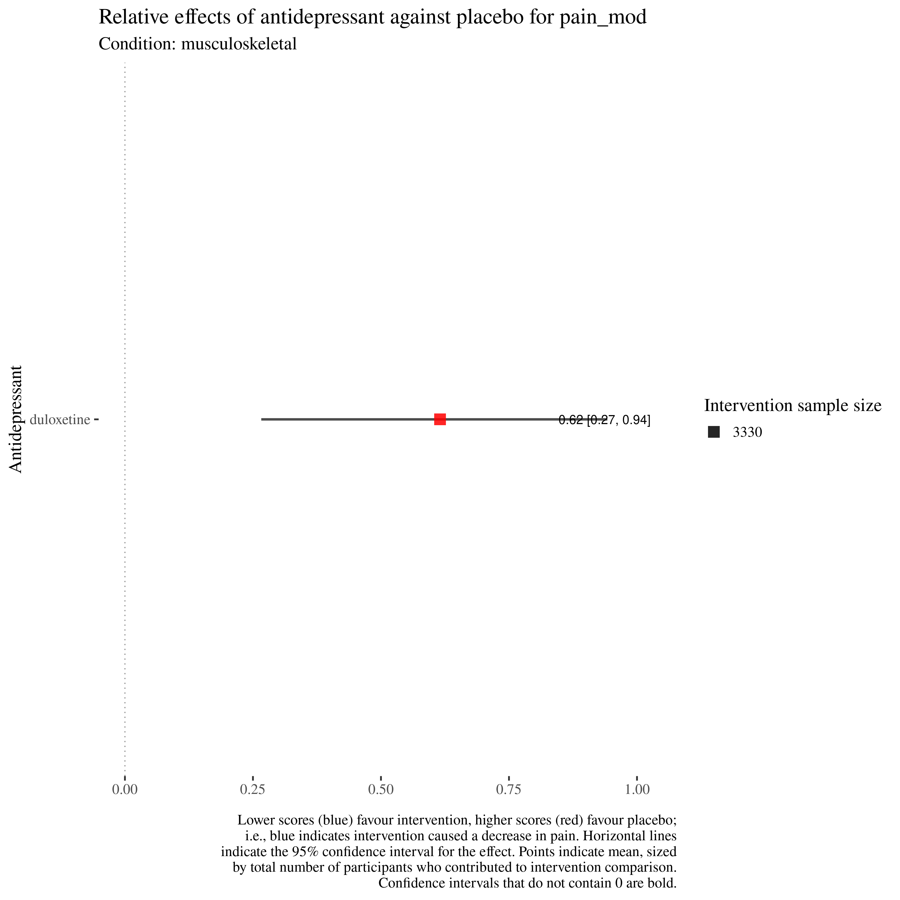
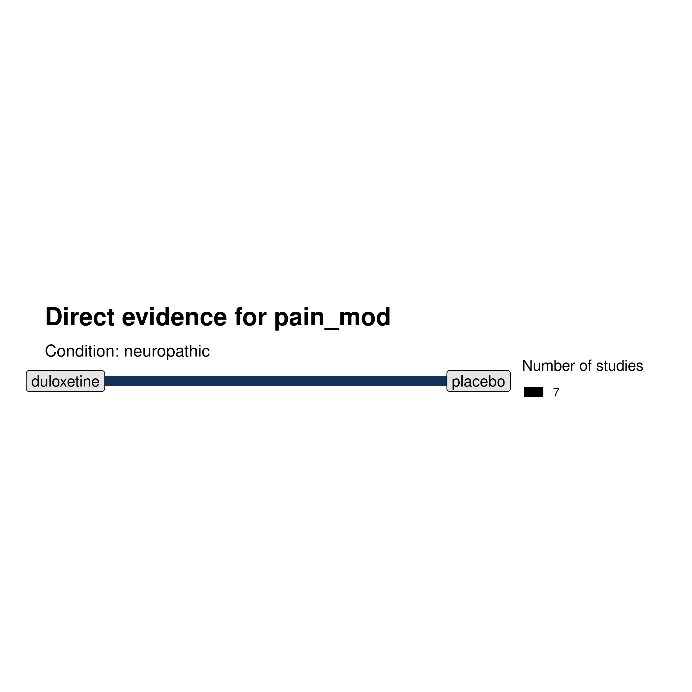
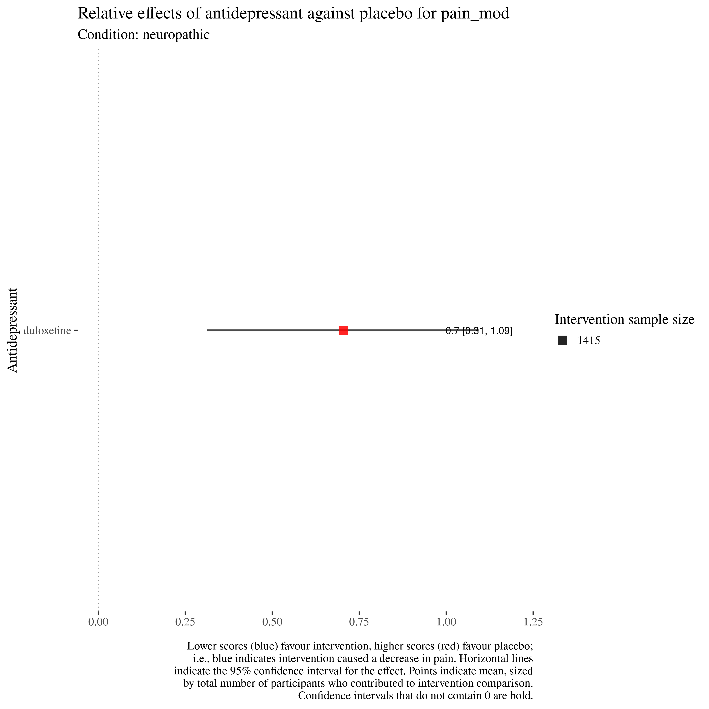
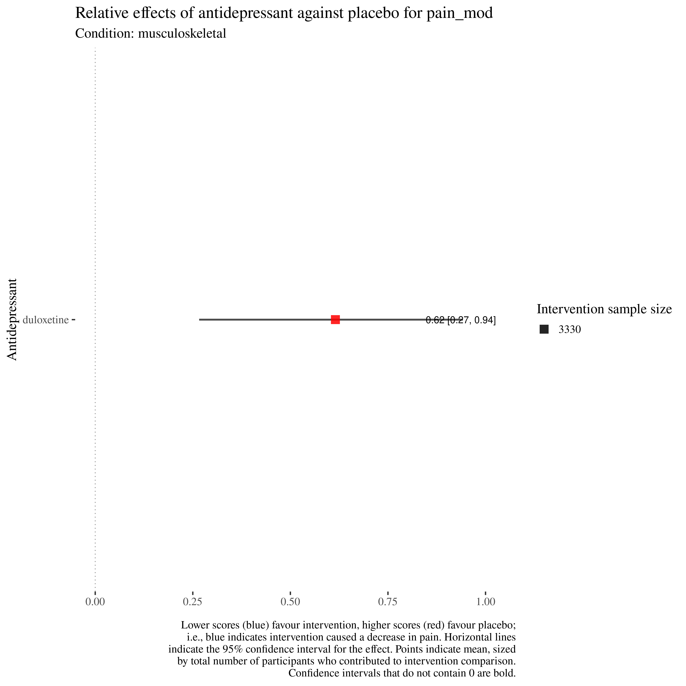
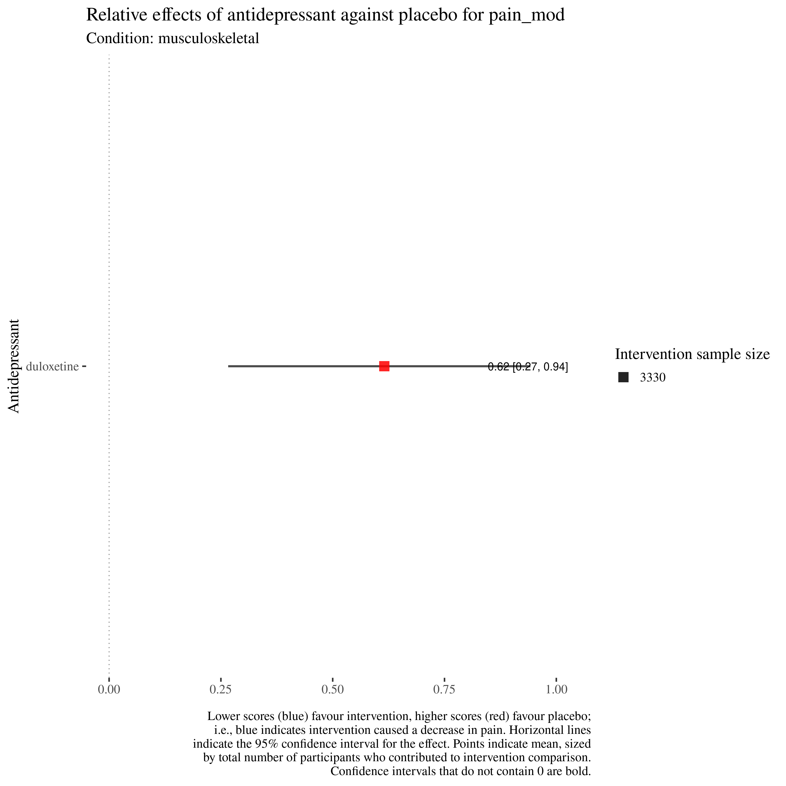

Skip to main content
Antidepressants for pain management in adults with chronic pain
Show table of contents
Table of contents
1
Overview
2
Pain intensity results
3
Mood results
4
Moderate pain intensity results
5
Substantial pain results
6
Adverse results
7
Quality of life results
8
Sleep results
9
Physical function results
10
Withdrawal results
11
Pipeline
4
Moderate pain intensity results
4.1
NMA: all in for pain_mod
Network meta-analysis results across all conditions, classes, and doses. 
4.2
Conditions
4.2.1
fibromyalgia

4.2.2
musculoskeletal

4.2.3
neuropathic

3
Mood results
5
Substantial pain results
On this page
4
Moderate pain intensity results
4.1
NMA: all in for pain_mod
4.2
Conditions
4.2.1
fibromyalgia
4.2.2
musculoskeletal
4.2.3
neuropathic
 
